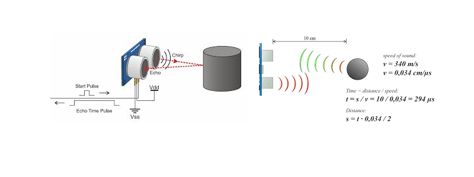
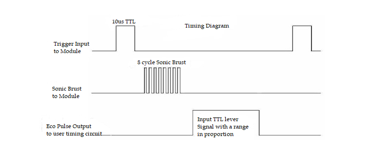
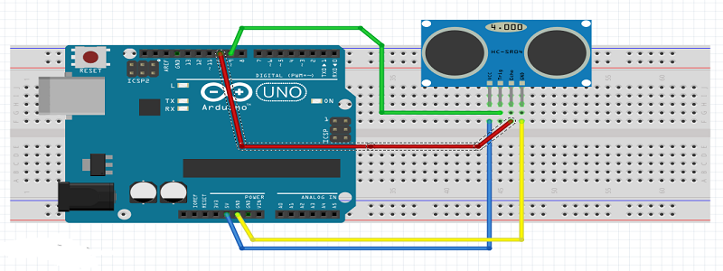

An Ultrasonic sensor is a device that can measure the distance to an object by using sound waves. It measures distance by sending out a sound wave at a specific frequency and listening for that sound wave to bounce back. By recording the elapsed time between the sound wave being generated and the sound wave bouncing back, it is possible to calculate the distance between the sonar sensor and the object.
It emits an ultrasound at 40 000 Hz which travels through the air and if there is an object or obstacle on its path It will bounce back to the module. Considering the travel time and the speed of the sound you can calculate the distance.
The HC-SR04 Ultrasonic Module has 4 pins, Ground, VCC, Trig and Echo. The Ground and the VCC pins of the module needs to be connected to the Ground and the 5 volts pins on the Arduino Board respectively and the trig and echo pins to any Digital I/O pin on the Arduino Board.
In order to generate the ultrasound, you need to set the Trig on a High State for 10 µs. That will send out an 8 cycle sonic burst which will travel at the speed sound and it will be received in the Echo pin. The Echo pin will output the time of travel of the sound wave in microseconds.
For example, if the object is 10 cm away from the sensor, and the speed of the sound is 340 m/s or 0.034 cm/µs the sound wave will need to travel about 294 u seconds. But what you will get from the Echo pin will be double that number because the sound waves needs to travel forward and bounce backward. So in order to get the distance in cm we need to multiply the received travel time value from the echo pin by 0.034 and divide it by 2.
Sensor has 4 pins , Trigger pin connected with 9 and Echo pin connected with 10. 
const int trigPin = 9; // defines pins numbers
const int echoPin = 10; // defines pins numbers
long duration; // defines variables
int distance; // defines variables
void setup() {
pinMode(trigPin, OUTPUT); // Sets the trigPin as an Output
pinMode(echoPin, INPUT); // Sets the echoPin as an Input
Serial.begin(9600); // Starts the serial communication
}
void loop() {
digitalWrite(trigPin, LOW); // Clears the trigPin
delayMicroseconds(2);
digitalWrite(trigPin, HIGH);
delayMicroseconds(10); // Sets the trigPin on HIGH state for 10 micro seconds
digitalWrite(trigPin, LOW);
duration = pulseIn(echoPin, HIGH); // Reads the echoPin, returns the sound wave travel time in microseconds
distance= duration*0.034/2; // Calculating the distance
Serial.print("Distance: "); // Prints the distance on the Serial Monitor
Serial.print(distance); // Prints the distance on the Serial Monitor
Serial.println(" Cm"); // Prints the distance on the Serial Monitor
}
Using the pulseIn() function you have to read the travel time and put that value into the variable “duration”. This function has 2 parameters, the first one is the name of the echo pin and for the second one you can write either HIGH or LOW. In this case, HIGH means that the pulsIn() function will wait for the pin to go HIGH caused by the bounced sound wave and it will start timing, then it will wait for the pin to go LOW when the sound wave will end which will stop the timing. At the end the function will return the length of the pulse in microseconds. For getting the distance we will multiply the duration by 0.034 and divide it by 2 as we explained this equation previously. At the end we will print the value of the distance on the Serial Monitor.